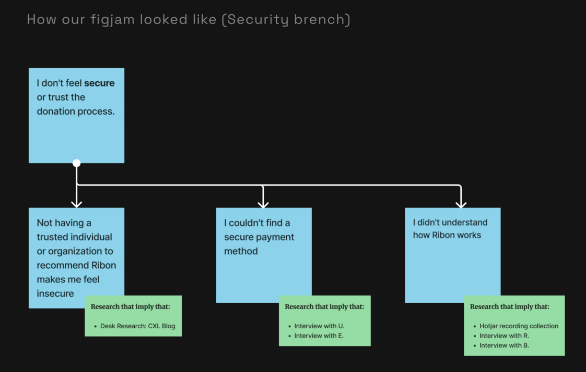
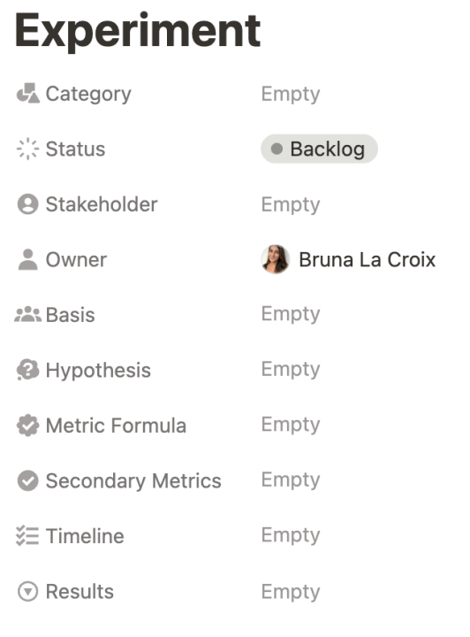
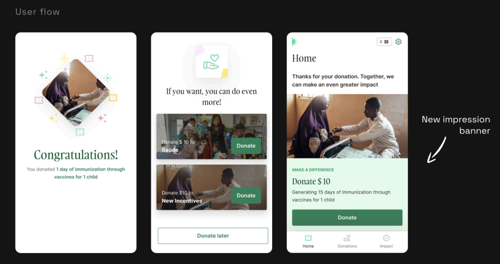
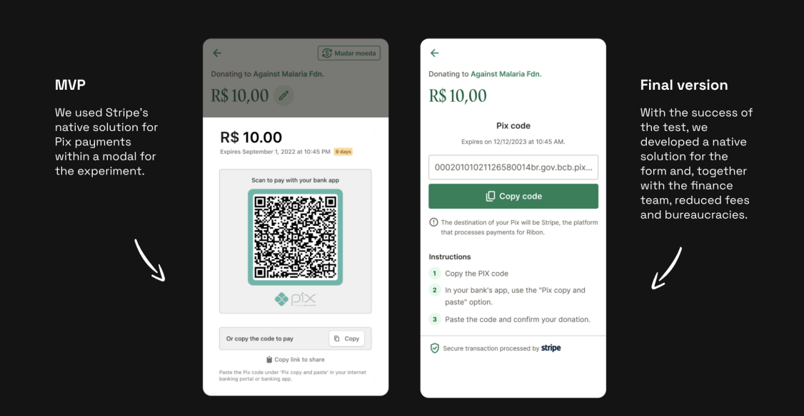
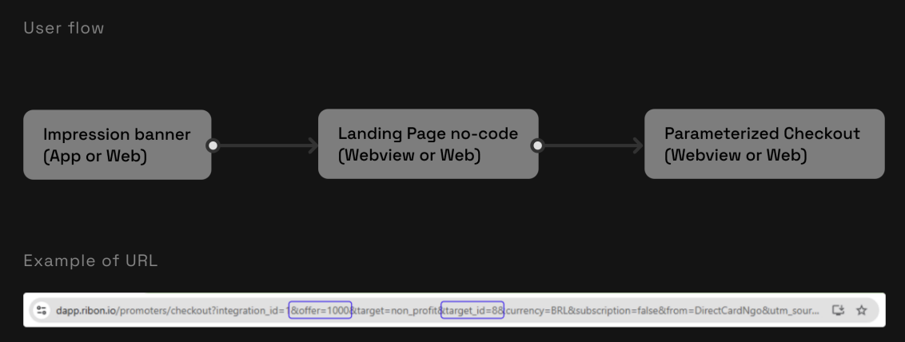
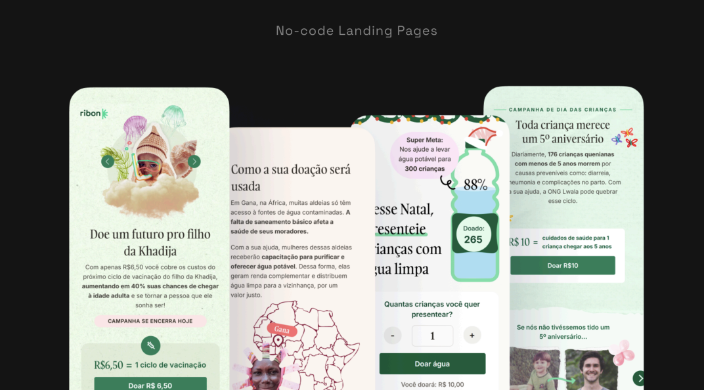

About Ribon
Ribon is a social impact startup that facilitates donations to nonprofits through an innovative and accessible model. Users donate to social causes at no cost to themselves, using "tickets" — a virtual currency earned by engaging with content.
Ribon generates revenue when users choose to donate with their own funds after experiencing the virtual currency model.
Main Objective
Achieve the freemium conversion benchmark of 1% in paid donations — the reference metric from Lean Analytics for Product-Market Fit.
Why it mattered
Ribon had just pivoted its business model and was approaching a new investment round. We needed metrics that demonstrated Product-Market Fit — starting from a baseline of just 0.03% conversion.
Head of Growth
- 01Led discovery with paying users and turned insights into actionable hypotheses.
- 02Structured a weekly experimentation process with clear ownership and rituals.
- 03Prioritized initiatives using the Opportunity Solution Tree (Teresa Torres), combining qualitative and quantitative evidence.
- 04Defined and tracked success metrics (e.g., form opens, donation conversions).
- 05Facilitated communication between product, design, engineering, marketing, and leadership.
Starting at 0.03%,
one experiment
per week
After launching a new business model, conversion was at just 0.03%. We launched a growth squad — myself as head of growth, a developer, and a designer — collaborating closely with product and marketing teams.
We committed to running at least one experiment per week, focusing on hypotheses validated through interviews and behavioral data.
Is the donation path clear and intuitive?
Do users trust the process?
What drives users to donate?
Planning,
prioritization
& execution
We used the Opportunity Solution Tree framework (Teresa Torres) to structure our decision-making. Each branch and hypothesis had supporting evidence attached — user interview quotes, Mixpanel analyses, and Hotjar recordings.
We continuously reached out to users who had made paid donations to maintain an ongoing interview process and refine our strategies.

With prioritized experiments, we used a testing database on Notion to organize and track progress. Each experiment had an owner, hypothesis, success metric, and timeline. Weekly reviews kept the team aligned; results were shared in the "Test Results" Discord channel.

The experiments
that made the difference
Among various inconclusive, failed, and successful experiments, three deliverables truly moved the needle.
Impression Banner
We observed via Mixpanel that ~50% of users returned to the home screen even after completing a free donation with virtual currency. Although we had an intermediate conversion screen post-donation, we decided to add a banner on the home screen to keep the paid donation opportunity visible.
We ran an A/B test comparing the home screen with and without the banner.

New Payment Method: Pix
Since all financial operations of Ribon take place in the United States, using Pix involved high fees and bureaucratic processes. Nevertheless, desk research showed that Pix is the preferred donation method for Brazilians (2022 IDIS Donation Research).
We tested this option with a reduced revenue margin. The success of this experiment confirmed that users had concerns about security — a payment method that doesn't require sensitive data like credit card numbers significantly increased trust.

Testing What Resonates with Our Users
The most impactful experiment focused on motivation. We rebuilt the checkout flow to accept dynamic parameters, allowing rapid testing of motivational copy using no-code landing pages — without engineering cycles for each iteration.

Best-performing elements across our no-code landing page experiments:

What the journey
taught us
User listening is the foundation. The most impactful ideas came directly from user interviews. No amount of data analysis replaced hearing users describe their fears and motivations in their own words.
Structure fuels speed. A clear experimentation process — with defined ownership, weekly rituals, and a shared results channel — helped the team align quickly and reduce decision fatigue across functions.
Test small, learn fast. Simple, low-cost tests (including no-code landing pages) enabled us to validate ideas before committing engineering resources. This kept the cycle tight and hypothesis-driven.
1% achieved —
and what came next
We achieved our goal of reaching the 1% benchmark, an excellent metric for Product-Market Fit (PMF). However, we realized that to truly solidify the PMF, our product needed more "stickiness." Although conversion had increased significantly, retaining paying donors remained the next challenge — which became the focus of the user acquisition case study.
Explore more work
Back to Cases